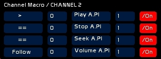
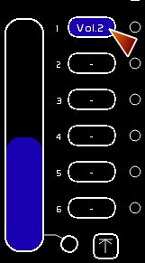
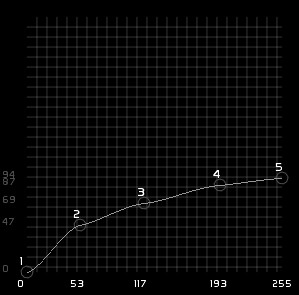
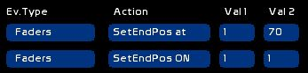

Table des matières
Remoting audio
There are several ways to remotely control audio players.
Using Channel Macros
It is possible by using only two channels to fully remotely control an audio player.
- load a file in an audio player
- setting stop play seek and loop
- following volume, pan, pitch depending on channel intensity
This approach enables you to work equally well from CueList or Faders space.
See * Channel description, Channel macros

Using a Banger
Main functions are controllable from a banger, enabling you to automate your show:
- selecting and loading a file inside a player
- play/pause, seek, loop, seek to CueIn, Cue Mode
- setting Volume, Pan or a precise pitch
Creation of audio cross-fades is done using the Faders LFO function in the special audio mode (see Faders category in Banger).
Don't forget that:
- you can embed a banger inside a memory, trigering the banger on GO
- bangers may be also triggered manually, as a simple push button box.
See Banger, audio players category.
Controlling audio sliders with Faders
There are two ways to do this:
- using a channel recorded inside the fader, and having an audio macro
- assigning to a dock the control of the Volume, Pan or Pitch of an audio player:
- Click [AFFECT TO DOCK]
- Select the control to use
- Click dock to receive this control
! When the selected dock is remotely controlling audio, Banger/ Audio Category or the mouse will not have any effect.
With this method, you have the fading benefits of a fader (speed, duration, LFO, StopPos).
StopPos will help you record precise ending points for the cross-fade. Those levels are expressed from 0 to 100 or 0 to 255 (it is the Fader which is recorded ).




Here a curve assigned to a fader appears flat. It enables you to fade up and fade out your sound very smoothly.